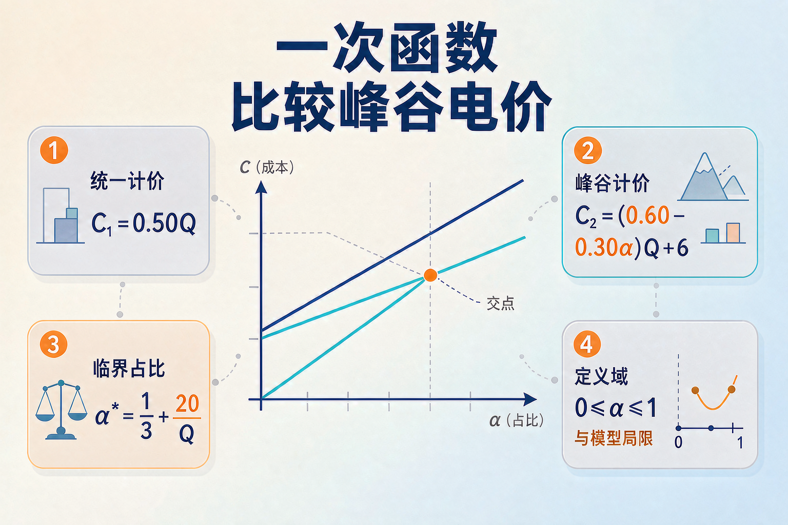

峰谷电价怎么选才省？——用一次函数找决策临界点
一张 300 千瓦时的电费单，爸爸说申请峰谷计价肯定划算，妈妈说白天更贵还多交 6 元——到底谁对？

知识结构：把占比写进斜率 → 求临界点 → 检查定义域 → 说明模型局限
本节切口与已有「手机套餐比较」课件互补：这里比较的不是两条现成直线，而是先由谷段占比调出等效斜率，再讨论交点是否落在物理取值域内。
已经会：你会画 y = kx + b，也会求两条直线的交点。
但是问题来了：电费单里的斜率根本不是给定的常数，它随夜里用了多少电而变，还多出一笔固定服务费。只比单价会得出错误结论。
所以今天学：把「谷段用电占比」写进斜率，用一次函数替家庭做一个带成立条件的决策，并说清结论什么时候会失效。
你的角色：家庭用电规划师。成果是一页 A4 决策报告，要能被不懂函数的家人看懂。
选择或输入后，本课会围绕你的问题展开。
能从分时账单中识别变量与常量，写出统一计价和峰谷计价两个一次函数表达式。能把谷段占比 α 合并进斜率，解释 k(α) 为什么随 α 变化。
能求出费用相等的临界占比，并在交点两侧各代入一次验证结论。能检查临界点是否落在 α ∈ [0,1] 内，并说明至少两条模型局限。
对应课标：能在实际问题中列出一次函数的表达式，并结合图象与表达式的性质解决简单的实际问题；探索并理解 k 值变化对图象的影响。
第 1 题（识别）：下面哪个式子是关于 Q 的一次函数？A. 0.5Q B. 0.3Q² + 6 C. 6/Q
第 2 题（比较）：直线 y = 0.6Q + 6 与 y = 0.5Q 在 Q > 0 时谁更大？先凭直觉选，学完再回来验。
前测不记分，它的作用是让你在第 14 页看见自己从哪里走到了哪里。
情境：北京一个三口之家本月用电 Q = 300 千瓦时。统一计价每千瓦时 0.50 元；峰谷计价峰段 0.60 元、谷段 0.30 元，每月另收 6 元固定服务费。数字来自本材料给定的教学示例账单，用于保证可复算。
统一计价：C₁ = 0.50Q。斜率 0.50，截距 0，图象过原点。
峰谷计价：C₂ = 0.60Q峰 + 0.30Q谷 + 6。这里有两个电量变量，暂时还不是关于 Q 的一次函数，需要先把它们合并。
把实际问题翻译成一次函数，第一步永远是「谁是自变量、谁是常量」。Q 是自变量，单价与固定服务费是常量；Q峰 与 Q谷 只是 Q 的两部分，不是新的独立自变量。这一步判错，后面全盘皆错。
请解释：为什么 C₁ 的图象一定过原点，而 C₂ 的图象在 Q = 0 时仍然等于 6？这个 6 在决策里扮演什么角色？
定义谷段用电占比 α = Q谷 / Q，于是 Q谷 = αQ、Q峰 = (1−α)Q。α 的物理取值域是 [0,1]，占比不能为负，也不能超过百分之百。
C₂ = 0.60(1−α)Q + 0.30αQ + 6 = (0.60 − 0.30α)Q + 6
对固定的 α，C₂ 是关于 Q 的一次函数，斜率 k(α) = 0.60 − 0.30α，截距 b = 6。谷段占比越大，等效单价越低，直线越平缓。
家里连续七天的谷段占比记录是 0.32、0.35、0.41、0.38、0.44、0.52、0.47，平均约 0.41。周末洗衣机定时放在夜里，占比明显升高；考试周早睡早起，占比又降下来。这个波动是后面讨论模型局限的关键证据。
动手算：取 α = 0.5，写出 k(α) 的数值，并计算 Q = 300 时的 C₂；再取 α = 0.3 重算一次。你应当看到两条不同的直线。
判断：「谷段电价比统一电价便宜，所以只要申请峰谷计价就一定省钱。」这句话是否正确？
这类错误的共同名字叫「只看局部单价，不看整体结构」。记忆锚点：占比调斜率，服务费抬截距，两者一起决定谁在下。把这句话念一遍，再回看第 1 页爸爸妈妈的分歧，你会发现两人各说对了一半。
取 Q = 300：C₁ = 150，C₂ = (0.60 − 0.30α)×300 + 6 = 186 − 90α。
令 C₂ = C₁：186 − 90α = 150 ⟹ α = 0.4。临界占比是百分之四十：α > 0.4 时峰谷计价更省，α < 0.4 时反而更贵。
向右验证：α = 0.5 时 C₂ = 141 元，比 150 元省 9 元。向左验证：α = 0.3 时 C₂ = 159 元，比 150 元多花 9 元。两个方向都验过，结论才站得住。
代入家里七天的平均占比 0.41：C₂ = 186 − 90×0.41 = 149.1 元，比统一计价省 0.9 元。注意这个优势非常薄——只要某几天作息改变让 α 掉回 0.38，结论立刻翻转。这正是下一页要查边界的原因。
评估：如果只告诉你「平均占比 0.41」，你会直接建议申请吗？请写出你还想追问的两条信息。
拖动滑块改变谷段占比 α，画布会重画统一计价与峰谷计价两条费用直线，并标出当前 α 下的省钱金额。
观察任务：把 α 从 0 拖到 1，说明峰谷直线的斜率怎么变；再找出让两条线恰好重合的 α，看它是否等于你在第 7 页算出的 0.4。
看见它：两条费用直线，交点就是「两种方案一样贵」的那一刻。
拆开它：峰谷费用由「等效单价 × 电量」加「固定服务费」组成，前者归斜率，后者归截距。
解释它：为什么用电量越大临界占比越接近三分之一？因为 6 元服务费被摊薄到更多电量上。
比较它：与「手机套餐两种方案比大小」相比，本课的斜率本身是变量，交点可能落在定义域外。
迁移它：网约车起步价加里程价、快递首重加续重，都是「斜率 + 截距」的同一套结构。
五镜头不是五个知识点，而是同一个结论的五种看法。能换镜头看，才说明你真的理解了它，而不是背下了一个 0.4。
易错点一（混淆）：把 0.60 − 0.30α 里的 α 当成 Q 的系数，误以为它是二次函数。α 是给定的占比参数，Q 才是自变量。
易错点二（搞反）：把「峰谷更省」写成 α < 0.4。代入 α = 0.3 得 159 元 > 150 元，方向立刻暴露错误。
易错点三（忘记）：漏掉每月 6 元固定服务费，得到 α = 1/3 而不是 0.4。截距不能丢。
口诀：占比调斜率，服务费抬截距；交点先求出，边界再检查。
请用一句话说明：为什么「谷段便宜一半」不足以推出「申请一定划算」？把你写的话和第 6 页 ConcepTest 的错因对照，看看是否抓住了同一个结构。
把 Q 保留为参数，令 (0.60 − 0.30α)Q + 6 = 0.50Q，整理得 α* = 1/3 + 20/Q。
Q = 100 时 α* ≈ 0.533；Q = 300 时 α* = 0.4；Q = 600 时 α* ≈ 0.367。用电量越大，临界占比越接近 1/3，但永远大于 1/3。
解 1/3 + 20/Q > 1 得 Q < 30：月用电不足 30 千瓦时时，临界点落在定义域 [0,1] 之外，正确结论是「不申请」，而不是报一个大于百分之百的占比。
第二个局限：α 并非常数。七天记录最低 0.32、最高 0.52，波动近二十个百分点；换季开空调、寒假作息改变都会让它移动，进而让结论翻转。第三个局限：固定服务费按整月收取，中途申请或退订要按天折算，模型还需再修一次。
请论证：在 α 会波动的现实里，把结论写成「α > 0.4 就申请」是否足够稳妥？你会给家人加一条什么样的安全余量建议？
平台 A：起步价 10 元含 3 千米，超出部分每千米 2.0 元。平台 B：无起步价，每千米 2.5 元。设行程 x 千米。
x ≤ 3 时 A 恒为 10 元，B = 2.5x 最多 7.5 元，B 恒便宜。x > 3 时 A = 2x + 4、B = 2.5x，令两者相等得 x = 8 千米。
分段结论：短途选 B，超过 8 千米选 A，8 千米附近两者一样。代入检验：x = 5 时 A = 14、B = 12.5；x = 10 时 A = 24、B = 25。
这里有两处边界：计价规则在 x = 3 处换式子，两条直线在 x = 8 处相交。只解一个方程、忽略分段点，是这道题最常见的错误。把它和电费问题对照：前者查 α 的定义域，后者查 x 的分段点，本质都是「先确认式子在哪一段有效，再比较大小」。
开放任务：请设计一个类似的「首重 + 续重」快递计价问题，自己给定两个平台的数字，要求交点落在分段点之后，并写出完整分段结论。
⭐ Level 1 基础巩固（必做）：写出 Q = 300 时 C₁、C₂ 的表达式，求临界占比，并在 α = 0.3 与 α = 0.5 处各代入验证一次。
⭐⭐ Level 2 能力应用（必做）：推导 α* = 1/3 + 20/Q，分别计算 Q = 100、600 时的临界占比，说明 Q 增大时临界点怎么移动以及为什么。
⭐⭐⭐ Level 3 迁移挑战（选做）：设计一个含两处分段点的计价情境，画出分段函数草图，找出所有交点并说明哪些交点落在有效区间之外。
三级不是三份重复练习：第一级练准确，第二级练一般化，第三级练迁移与设计。做完 Level 2 就具备了独立完成决策报告的全部工具。
第 1 题：下列哪个式子是关于 Q 的一次函数且斜率随参数 α 变化？
第 2 题：前测里你说 y = 0.6Q + 6 与 y = 0.5Q 在 Q > 0 时谁更大。现在加入 α 后，峰谷直线还可能落到统一计价下方吗？
回头看前测第 2 题：当时的判断没错，但那是 α = 0 的特殊情形。学习发生的证据，就是你现在能说清「什么时候例外」。
结论：Q = 300 千瓦时时，谷段占比超过 0.4 申请峰谷计价才省钱；家里平均 0.41 只省约 0.9 元，优势很薄。
成立条件：单价与固定服务费按材料给定值、α 在一个月内近似稳定、Q 明显大于 30 千瓦时。
可能失效：作息与季节让 α 波动；中途申请要按天折算服务费；用电量很小时临界点跑出定义域。
产出任务：请写一段 100 字左右的家庭建议，必须同时包含结论、成立条件、至少两条局限，以及一句家人能听懂的大白话。再附上你设计的网约车或快递迁移题的分段结论。评价量规看「有没有写条件」而不是「有没有算出 0.4」。
回到开头那张电费单：感觉会骗人，一次函数不会；但一次函数给出的答案，只有在写清假设、检查边界之后，才配得上被叫做一个决策。